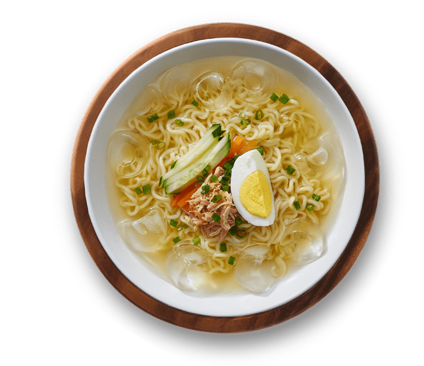

Noodles!
Indomie Cold Noodle

Ingredients:
- Soto Mie
- Ice cubes
- Chicken breast
- Egg
- Cucumber
- Carrots
- Green onion
Preparation time: 30 minutes
Cooking Instructions:
-
Cook Soto Mie noodles in hot boil water and rinse it off with cold
water.
-
Boil water that is less than the usual amount you cook for Soto Mie
(approx. 1/2 with its seasonings).
-
Add cold water and ice with cooked noodles into the boiled water with
Soto Mie sauce. You can also add soy sauce and sesame oil according to
your taste.
-
Garnish with chicken breast, egg, cucumber, carrots, and chopped green
onion.
Back to Main Page